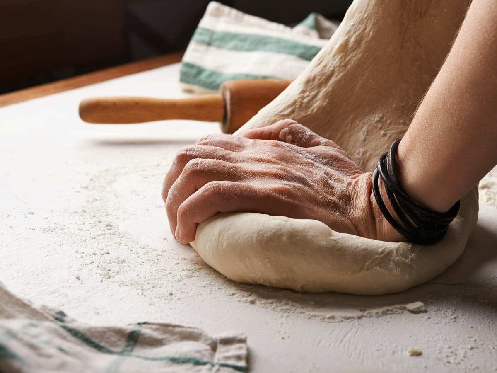
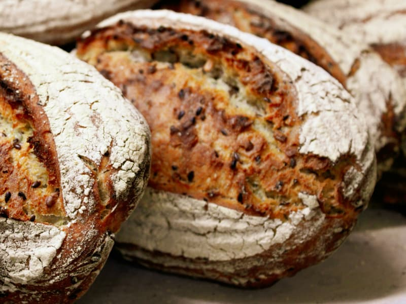
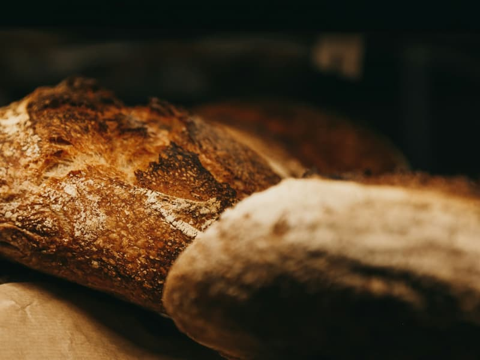
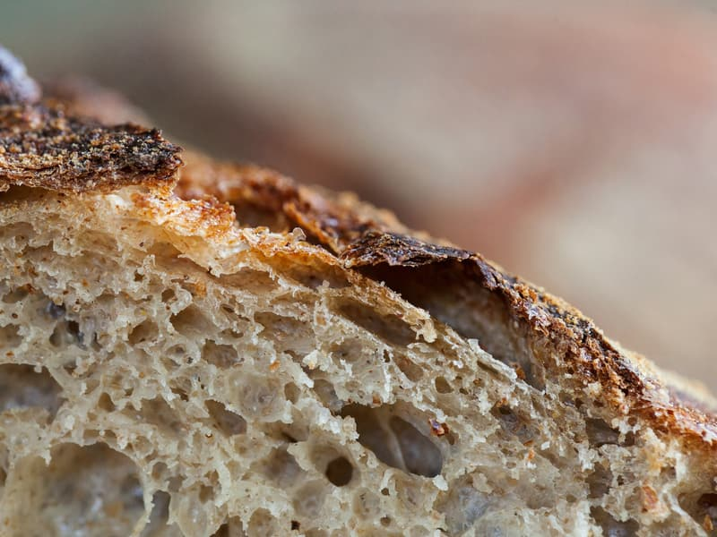

Bread and rolls
Baked on the premises, every day.
prices in the bakeryCraft bakery · Kielce
A craft bakery in Kielce. Baked on the premises, sold straight over the counter.
Services
The full range gets filled in with the owner — below is what a craft bakery does by definition.
Baked on the premises, every day.
prices in the bakerySweet baking — the range gets filled in after we talk.
prices in the bakeryLarger orders and baking for occasions — best arranged by phone in advance.
by arrangementPrices are in the bakery. We do not put them here until the owner confirms them — an out-of-date price on a website annoys people more than no price at all.
About
The bakery is at Bodzentyńska 19 in Kielce. 325 reviews at 4.7 is a number gathered one loaf at a time.
It has no website. Someone searching Google for fresh bread in Kielce lands on directories and maps, but not on you.
This page puts the address, the hours and the phone number in one place — and leaves room for what actually makes this bakery different.

From the oven and behind the counter



Illustrative photography under a free licence (Unsplash). Full list of photographers and sources: CREDITS.md.
Opening hours
Hours still need confirming with the owner — the Google listing has none.